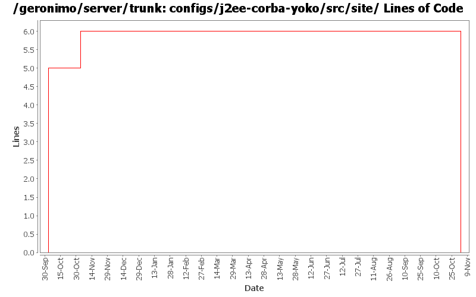

[root]/configs/j2ee-corba-yoko/src/site

| Author | Changes | Lines of Code | Lines per Change |
|---|---|---|---|
| Totals | 6 (100.0%) | 13 (100.0%) | 2.1 |
| jlaskowski | 1 (16.7%) | 6 (46.2%) | 6.0 |
| rickmcguire | 2 (33.3%) | 5 (38.5%) | 2.5 |
| jdillon | 1 (16.7%) | 2 (15.4%) | 2.0 |
| prasad | 2 (33.3%) | 0 (0.0%) | 0.0 |
GERONIMO-3565. Configs distributed amongst framework/configs and plugins
0 lines of code changed in 2 files:
Std props
dos2unix on some files with inconsistent newlines
2 lines of code changed in 1 file:
GERONIMO-2537 All Geronimo source files must be brought in line with the new ASF source header and copyright notice policy
The rest of Geronimo sources migrated
6 lines of code changed in 1 file:
GERONIMO-2180 Add Yoko ORB support to openejb/Geronimo
5 lines of code changed in 2 files: